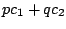
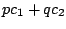
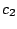
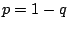
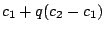
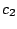
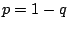
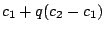

Example F08.two.cosines.pd (Figure 6.17) shows how to make a carrier signal that
cross-fades between harmonics to make continuously variable center frequencies.
The center frequency quotient
appears as the output of a line~ object. This is separated into its
fractional part (using the wrap~ object) and its integer part (by
subtracting the fractional part from the original). These are labeled as  and
and  to agree with the treatment in Section 6.3.
to agree with the treatment in Section 6.3.
The phase--a sawtooth wave at the fundamental frequency--is multiplied by
both  and
and  (the latter by adding the original sawtooth into the
former), and the cosines of both are taken; they are therefore at
(the latter by adding the original sawtooth into the
former), and the cosines of both are taken; they are therefore at  and
and  times the fundamental frequency and have no discontinuities at phase wrapping
points. The next several objects in the patch compute the weighted sum
, where
times the fundamental frequency and have no discontinuities at phase wrapping
points. The next several objects in the patch compute the weighted sum
, where  ,  are the two sinusoids and , by
evaluating an equivalent expression,
. This gives
us the desired movable-frequency carrier signal.
,  are the two sinusoids and , by
evaluating an equivalent expression,
. This gives
us the desired movable-frequency carrier signal.
Example F09.declickit.pd (not shown here) shows how, by adding a samphold~ object after the line~ object controlling center frequency, you can avoid discontinuities in the output signal even if the desired center frequency changes discontinuously. In the example the center frequency quotient alternates between 4 and 13.5. At ramp times below about 20 msec there are audible artifacts when using the line~ object alone which disappear when the samphold~ object is added. (A disadvantage of sample-and-holding the frequency quotient is that, for very low fundamental frequencies, the changes can be heard as discrete steps. So in situations where the fundamental frequency is low and the center frequency need not change very quickly, it may be better to omit the sample-and-hold step.)
The next two examples demonstrate using the crossfading-oscillators carrier as part of the classic two-operator phase modulation technique. The same modulating oscillator is added separately to the phases of the two cosines. The resulting spectra can be made to travel up and down in frequency, but because of the complicated phase relationships between neighboring peaks in the phase modulation spectrum, no matter how you align two such spectra you can never avoid getting phase cancellations where they overlap.